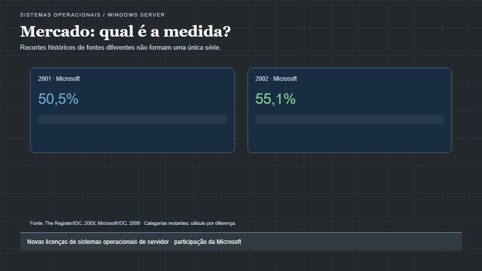
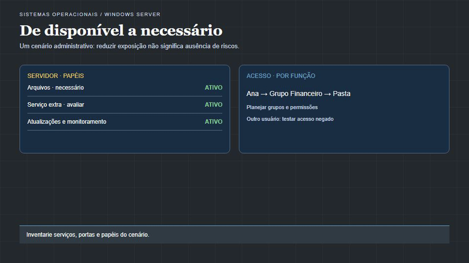
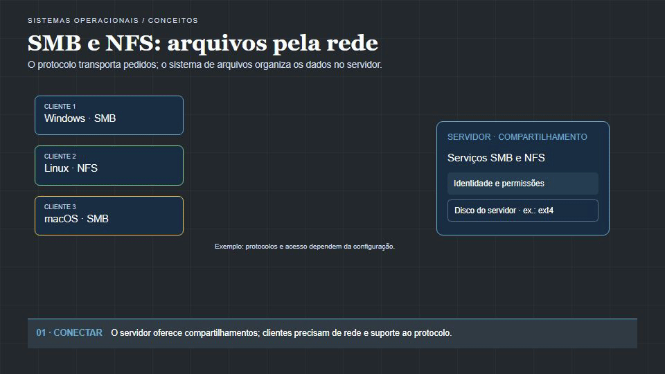
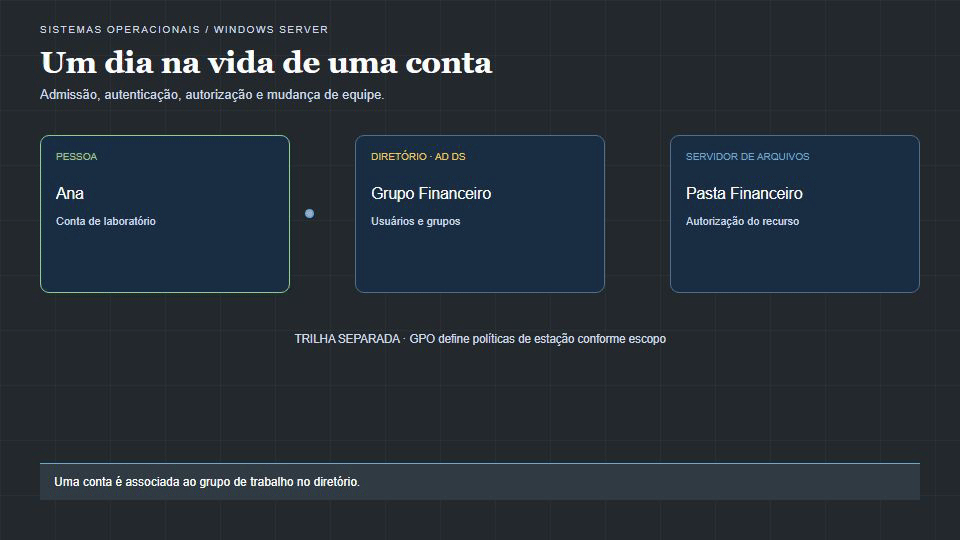

AULA 11 · HISTÓRIA, SEGURANÇA E ADMINISTRAÇÃO
Windows Server - A escolha das grandes corporações para ambientes LAN
De Windows 2000 às versões atuais: entenda os problemas resolvidos, os riscos e os motivos para escolher — ou não — a plataforma.
Roteiro: contexto → mercado → segurança → Active Directory → versões recentes → automação → decisão de arquitetura.
BLOCO 01
Contexto e evolução
Por que centralizar a administração?
AULA 11 · WINDOWS SERVER
Uma empresa cresce. A administração precisa acompanhar.
A empresa fictícia Aurora começa com 20 computadores, contas locais, uma impressora e uma pasta compartilhada. Depois chega a 300 pessoas, abre uma filial e passa a ter trabalho remoto.
Como cadastrar usuários, organizar acesso, aplicar regras e desligar contas sem repetir tudo em cada máquina?
Pergunta-guia: que problema cada geração do Windows Server ajudou a resolver — e qual responsabilidade continuou com o administrador?
Ao final da aula, você deverá conseguir
- Distinguir sistema de desktop, sistema de servidor e papel de servidor.
- Explicar o crescimento da plataforma sem confundir adoção com segurança.
- Relacionar AD, grupos, DNS, políticas e arquivos.
- Avaliar vantagens, limites e alternativas em vez de escolher apenas por familiaridade.
Os números da empresa são um cenário didático, não uma estatística de mercado.
AULA 11 · WINDOWS SERVER
2000: centralizar a identidade, ampliar a responsabilidade
O Windows 2000 introduziu o Active Directory. A mudança de perspectiva é sair de máquinas administradas isoladamente para um diretório que organiza identidades e computadores.
No caso Aurora, a conta de uma pessoa deixa de ser apenas um cadastro independente em cada PC.
Microsoft · origem e evolução do Active Directory ↗
Não era “tudo aberto”
O Windows 2000 já possuía permissões NTFS. O problema a discutir é a combinação de serviços e componentes habilitados, vulnerabilidades, exposição à rede e dificuldades de atualização.
Portanto, evite confundir existência de controle de acesso com configuração segura.
Microsoft · permissões NTFS no Windows 2000 e 2003 ↗
Por que o mercado precisava disso?
A proposta de valor para a empresa do exemplo é centralizar cadastros e administração. Para demonstrar adoção histórica, precisamos explicitar o que cada pesquisa contou: licença nova, instalação, receita ou servidor web são indicadores diferentes.
AULA 11 · WINDOWS SERVER
Mercado: crescimento com o denominador à vista
| Período | Dado | O que significa |
|---|---|---|
| 2001 | Microsoft: 50,5% | Participação em novas remessas de licenças de sistemas operacionais de servidor, conforme reportagem de 2003 sobre dados IDC. |
| 2002 | Microsoft: 55,1%; Linux pago: 23,1%. | Recorte comercial de novas licenças; não contabiliza toda implantação gratuita de Linux. |
| 2005 | Receita de servidores Windows supera a de Unix. | Marco de receita divulgado pela Microsoft com base no IDC; não é percentual de instalações do Windows Server 2003. |
The Register · reportagem contemporânea, 08/10/2003 ↗
Microsoft · marco de receita de 2005 ↗
Limite da evidência: não atribuímos esses números ao Windows 2000 ou ao Windows Server 2003 isoladamente.
O percentual exato de 2000 e a participação específica do Server 2003 continuam pendentes de uma fonte comparável.

AULA 11 · WINDOWS SERVER
Segurança: por que recursos disponíveis não bastavam?
| Caso | Problema | Lição |
|---|---|---|
| Code Red / IIS, 2001 | Exploração de vulnerabilidade em serviço exposto; já havia correção antes da propagação. | Serviços desnecessários e atraso de patch aumentam o risco. |
| Nimda, 2001 | Incidente útil para discutir propagação e gestão de correções em ambientes conectados. | Não basta corrigir uma única máquina: inventário e cobertura importam. |
| RPC/DCOM, MS03-026 | Falha crítica que alcançava várias gerações, incluindo Windows Server 2003. | Uma versão nova não elimina a necessidade de atualização e segmentação. |
Microsoft · cronologia e gestão de patches — documento em japonês ↗
Microsoft · boletim MS03-026 ↗
Usaremos diagramas históricos, sem executar worms, sistemas vulneráveis conectados à rede ou demonstrações de exploração.
AULA 11 · WINDOWS SERVER
2003: habilitar apenas o necessário
O ponto de virada da narrativa é reduzir a superfície de ataque, não “inventar as permissões NTFS”.
A comparação documentada do WebDAV é um exemplo concreto: habilitado por padrão no Windows 2000, passou a ser opcional no Server 2003.
Microsoft · Security Development Lifecycle — PDF ↗
Dois princípios complementares: habilitar apenas os serviços necessários e conceder apenas os acessos necessários.
Não traduzir segurança como uma coleção indiscriminada
de regras Deny.
Para a Aurora, o servidor deve executar os papéis planejados. O funcionário recebe acesso por função e grupo, e não controle total apenas porque consegue entrar na rede.
Microsoft · avaliação de permissões ↗

BLOCO 02
Identidade e permissões
Do usuário ao acesso efetivo.
AULA 11 · WINDOWS SERVER
Quem é você? O que pode fazer?
Estes conceitos são centrais para a atividade. Use arquivos e ambientes de laboratório autorizados.
Abrir explicação e prática de observação
Identidade, autenticação e autorização
Identidade representa um usuário, computador ou serviço. A autenticação procura comprovar essa identidade. A autorização determina o que ela pode fazer.
Auditoria registra eventos quando a política apropriada está configurada. Não confunda a ausência de evento com prova de que nada ocorreu.
Uma conta pode pertencer a vários grupos. Uma permissão atribuída a um grupo pode alcançar seus membros.
Alterações de associação podem exigir nova sessão ou atualização do token antes de aparecer em um teste.
whoami
whoami /groups
whoami /userNo Prompt ou PowerShell, observe a identidade e os grupos da sessão atual.
As saídas representam o contexto da sessão, não uma lista universal de todas as autorizações em toda a rede.
AULA 11 · WINDOWS SERVER
NTFS: grupos, regras e herança
Estes conceitos são centrais para a atividade. Use arquivos e ambientes de laboratório autorizados.
Abrir explicação e prática de observação
Permissões e herança
Uma ACL reúne entradas de controle de acesso. Em uma pasta NTFS, use Propriedades → Segurança → Avançadas para observar proprietário, entradas e herança.
Permissões frequentemente tratam leitura, gravação, modificação e controle total. Algumas entradas são herdadas do diretório pai; alterações na herança precisam ser planejadas.
icacls "$env:USERPROFILE\LabSO"
Get-Acl "$env:USERPROFILE\LabSO" | Format-ListExecute esses exemplos no PowerShell. Primeiro crie uma pasta de teste no seu perfil:
New-Item -ItemType Directory -Path "$env:USERPROFILE\LabSO"Se a pasta já existir, não é necessário criá-la novamente. Consulte apenas a pasta do laboratório.
A lista mostra regras. O acesso efetivo depende também da identidade, dos grupos, das entradas aplicáveis e do contexto.
Evite concluir o resultado apenas por uma linha isolada da ACL.
Exercício de observação
-
Crie uma pasta
LabSOno seu perfil e um arquivo sem dados pessoais. - Abra a aba Segurança e registre as permissões herdadas.
-
Consulte a mesma pasta com
icacls. - Em papel, proponha uma regra para um grupo e registre como a herança poderia afetá-la.
- Descreva como testaria leitura e gravação com uma conta permitida e outra sem permissão.
- Se não houver as contas e o ambiente necessários, identifique os resultados como hipóteses.
AULA 11 · WINDOWS SERVER
SMB: acesso local não é acesso pela rede
Estes conceitos são centrais para a atividade. Use arquivos e ambientes de laboratório autorizados.
Abrir explicação e prática de observação
Compartilhamento e acesso efetivo
SMB é um protocolo de acesso em rede. NTFS é o sistema de arquivos local neste exemplo.
Uma pasta pode ter permissões de compartilhamento e permissões NTFS. Em um acesso via SMB, ambas participam da decisão.
Exemplo de caminho UNC:
\\SERVIDOR-LAB\FinanceiroNo servidor do laboratório, quando os recursos e privilégios necessários estiverem disponíveis:
Get-SmbShare
Get-SmbShareAccess -Name FinanceiroEsses comandos consultam compartilhamentos e suas regras no contexto em que são executados.
Um teste local pela pasta LabSO
não é equivalente a um teste pela rede.
Uma concessão ampla no compartilhamento não elimina as restrições NTFS. Uma restrição no compartilhamento também pode impedir um acesso permitido localmente.

AULA 11 · WINDOWS SERVER
Active Directory: o centro da administração da LAN
Na Aurora, o desafio é conectar pessoas, contas, grupos, computadores e recursos sem repetir configurações em cada estação.
AD DS fornece o diretório e os serviços de domínio; grupos ajudam a administrar acesso.
Microsoft · grupos de segurança ↗
- Domínio: contexto do diretório e da administração.
- Controlador de domínio: fornece serviços do diretório e autenticação.
- DNS: participa da descoberta dos serviços do domínio.
- Unidade organizacional: organização e delegação; não substitui grupo de segurança.
- GPO: políticas aplicadas conforme escopo e processamento; não é simplesmente uma ACL de pasta.
Uma autenticação bem-sucedida não concede automaticamente acesso à pasta. O servidor do recurso avalia a autorização.
Mudanças de grupo também não devem ser apresentadas como revogação instantânea de todas as sessões.

Aprofundamento opcional: observar um domínio de laboratório
Domínio, OUs, grupos e DNS
O AD DS organiza objetos como usuários, grupos e computadores em um domínio.
Um controlador de domínio autentica e fornece serviços do diretório. DNS é uma dependência importante para localizar esses serviços.
OUs ajudam a organizar objetos e delegar administração; não substituem grupos de segurança.
Em uma VM de laboratório com AD DS já disponível, abra:
Server Manager → Tools → Active Directory Users and Computers
Identifique o domínio de teste. Crie uma OU de laboratório, um grupo de segurança e uma conta de teste conforme a orientação do professor.
Associe a conta ao grupo. Use um domínio de exemplo apenas em rede isolada.
Get-ADDomain
Get-ADUser -Filter * -SearchBase "OU=Lab,DC=lab,DC=example"
Get-ADGroupMember -Identity "GG-Lab-Financeiro"Os comandos exigem o módulo ActiveDirectory, conectividade e objetos correspondentes.
Substitua o caminho e o nome pelos do laboratório. A instalação e a promoção de um controlador mudam a função da máquina e devem seguir um roteiro próprio.
AULA 11 · WINDOWS SERVER
Evolução do AD: cada recurso responde a um problema
| Geração | Destaque | Problema de administração |
|---|---|---|
| 2000 | Introdução do Active Directory. | Centralizar identidades e computadores. |
| 2003 | Evolução de níveis funcionais e compatibilidade. | Atualizar mantendo um plano de coexistência. |
| 2008 / 2008 R2 | RODC para cenários de filial; lixeira do AD introduzida no 2008 R2. | Filial com limitações de segurança física e recuperação de objetos. |
| 2012 / 2012 R2 | Administração simplificada, interface para a lixeira e melhorias para DCs virtualizados. | Reduzir esforço operacional e melhorar a implantação. |
| 2016 | Nível funcional 2016. | Capacidades e requisitos do domínio e da floresta. |
| 2019 / 2022 | Sem novos níveis funcionais com esses nomes. | Separar versão do SO de capacidade funcional do diretório. |
| 2025 | Novo nível funcional e evolução do AD, incluindo páginas de 32 KiB e dMSA. | Escala, segurança e contas de serviço; avaliar requisitos específicos. |
Não são a mesma coisa:
- Versão do Windows Server.
- Nível funcional do domínio.
- Nível funcional da floresta.
Instalar um novo SO não equivale a habilitar automaticamente todos os recursos.
Microsoft · níveis funcionais ↗
BLOCO 03
Automação e nuvem
Das políticas locais à identidade híbrida.
AULA 11 · WINDOWS SERVER
Depois de 2015: o que muda para quem administra?
O objetivo não é decorar todos os lançamentos. É relacionar recursos a necessidades.
Nome de versão não é necessariamente ano de disponibilidade: Server 2022 foi disponibilizado em 2021; Server 2025, em 2024.
Microsoft · informações de lançamento ↗
| Versão | Recursos para apresentar | Tradução didática |
|---|---|---|
| 2016 | Containers Windows e Shielded VMs. | Novas formas de executar aplicações e proteger máquinas virtuais. |
| 2019 | Windows Admin Center, Storage Migration Service e melhorias de segurança. | Administração por navegador e migração de armazenamento. WAC é ferramenta de gestão, não exclusividade dessa versão. |
| 2022 | Secured-core, TLS 1.3 e melhorias SMB. | Proteção que considera hardware, sistema e comunicação. |
| 2025 | Evolução do AD, dMSA e SMB over QUIC em Standard e Datacenter. | Identidade e acesso remoto continuam evoluindo. |
Novidades de 2016 ↗ · Novidades de 2019 ↗ · Novidades de 2022 ↗ · Novidades de 2025 ↗
No Server 2022, SMB over QUIC está associado à Datacenter: Azure Edition. No 2025, a disponibilidade também alcança Standard e Datacenter.
Esse é um exemplo de por que verificar versão, edição e requisitos antes de prometer um recurso.
AULA 11 · WINDOWS SERVER
PowerShell: de cliques repetidos à administração reproduzível
Uma alteração em uma máquina pode ser confortável na interface gráfica. Repeti-la em dezenas de máquinas exige padronização, automação e registro.
PowerShell não foi substituído pelo WSL. A abertura do projeto e seu anúncio para Linux e macOS em 2016 mostram uma estratégia multiplataforma.
PowerShell Team · anúncio de 2016 ↗
| Ferramenta | Papel |
|---|---|
| Interface gráfica | Explorar, visualizar e administrar interativamente. |
| PowerShell | Automatizar consultas e tarefas administrativas. |
| WSL | Executar ambiente e ferramentas Linux no Windows. |
Correção histórica: Microsoft e SUSE
Em 2006 houve um acordo de colaboração Microsoft–Novell para interoperabilidade Windows/Linux, envolvendo SUSE Linux Enterprise.
Isso não foi uma aquisição da SUSE pela Microsoft. Também não sustenta a ideia de que o WSL surgiu porque PowerShell “não deu certo”.
Demonstração curta e somente de consulta
Get-Service |
Select-Object -First 5 Name, Status
Get-Process |
Sort-Object CPU -Descending |
Select-Object -First 5 Name, CPUExecute no PowerShell. A coluna CPU representa tempo de processador acumulado em segundos, não porcentagem instantânea. As saídas variam por máquina. O exemplo não instala funções, não altera permissões e não depende de AD.
AULA 11 · WINDOWS SERVER
Por que ainda existe Windows Server fora da LAN tradicional?
Não basta perguntar onde está a máquina. Precisamos saber qual serviço continua necessário: identidade, aplicação, arquivos, gestão ou compatibilidade.
Uma VM em outro local não elimina a administração de seu sistema operacional.
| Critério | Valor possível | Custo ou risco |
|---|---|---|
| Identidade e políticas | Integração com domínio e gestão existente. | Concentração de privilégios e necessidade de proteção do AD. |
| Aplicações | Compatibilidade com ERP e serviços existentes. | Dependência e custo de migração. |
| Arquivos | Compartilhamentos e regras conhecidos. | Backup, recuperação, disponibilidade e governança. |
| Equipe | Conhecimento e processos consolidados. | Treinamento e manutenção de competências. |
| Licenciamento | Recursos adequados à edição escolhida. | Avaliar custos e requisitos de licenças e CALs aplicáveis. |
Microsoft · proteção de controladores de domínio ↗
Microsoft · comparação de edições ↗
Cloud apenas teórica nesta aula.
Diferenciar servidor local, VM em provedor, serviço gerenciado e SaaS.
Não instalar conectores, sincronizar contas reais ou promover integração com nuvem.
Complemento conceitual: AD DS não é Entra ID
AD DS, Microsoft Entra ID e Microsoft Entra Domain Services são soluções distintas.
Sincronizar identidades não copia automaticamente permissões NTFS para qualquer recurso de nuvem.
A implantação híbrida fica para uma etapa futura.
BLOCO 04
Aplicação e revisão
Evidências, prática e desafios.
AULA 11 · WINDOWS SERVER
Prática opcional: evidência antes de mudar
Abrir checklist de diagnóstico seguro
Diagnóstico: evidências e limites
-
Confirme o usuário da sessão com
whoamie seus grupos comwhoami /groups. - Identifique se o teste é local ou por UNC. Confirme nome do servidor e conectividade do laboratório.
- Observe regras do compartilhamento e NTFS. Confira herança e possíveis entradas de negação.
- Teste primeiro uma operação permitida e depois uma que deve ser negada. Não use uma conta administradora como substituta do usuário.
- Registre a configuração, a operação, o resultado observado e uma hipótese. Não inclua senhas nos registros.
O resultado de um comando de consulta é uma evidência pontual. Uma auditoria completa exige política e coleta configuradas no ambiente.
PRÁTICA E REVISÃO
Desafio final: a próxima decisão da Aurora
A Aurora tem matriz, filial, funcionários remotos, pastas departamentais e um ERP que depende de Windows. Não há orçamento nem requisitos completos disponíveis.
- Qual problema concreto Windows Server e AD resolvem neste cenário?
- Explique por que Windows 2000 não significa “ausência de permissões”.
- Qual foi a mudança de postura discutida para 2003?
- Por que 55,1% de novas licenças não significa 55,1% de todas as instalações?
- Desenhe conta, grupo, recurso e decisão de acesso. Separe autenticação de autorização.
- Compare versão do SO e nível funcional.
- Escolha um recurso de 2016 em diante e associe-o a uma necessidade.
- Explique por que WSL não substitui PowerShell.
- Liste uma razão para manter um serviço local e uma para avaliar uma alternativa gerenciada.
- Quais dados de custo, compatibilidade e risco faltam antes de recomendar uma migração?
Orientação para entrega
Entregue uma página com:
- Decisão proposta.
- Justificativa.
- Riscos.
- Informações faltantes.
Separe fato documentado, resultado observado e hipótese. Não inclua senhas ou dados pessoais.
PRÁTICA E REVISÃO
Exercícios para desenvolver
Para cada item, registre procedimento, evidência e conclusão. Quando não houver o ambiente, descreva o teste e identifique o resultado como hipótese.
- Explique a diferença entre autenticação e autorização usando a pasta Financeiro.
- Identifique usuário e grupos da sessão; registre apenas informações necessárias.
- Crie uma tabela de permissões esperadas para Financeiro e Atendimento.
- Observe a ACL de uma pasta de laboratório usando a interface e icacls.
- Diferencie uma permissão herdada de uma explícita no seu cenário.
- Compare acesso local com acesso por caminho UNC.
- Descreva um teste positivo e um negativo para gravação em SMB.
- Desenhe usuário, grupo, OU e domínio, indicando a função de cada um.
- Explique por que DNS é importante em um domínio AD DS.
- Compare AD DS e Entra ID e explique o que uma sincronização de identidades não garante sobre ACLs NTFS.
- Diagnostique: uma conta autentica, mas não grava. Liste três verificações antes de mudar permissões.
- Monte uma matriz com identidade, grupo, ação, regra esperada, resultado observado e evidência.
Como organizar sua entrega
Informe o ambiente e a topologia, separe observação de hipótese e registre o resultado dos testes positivos e negativos. Revise o conteúdo antes de entregar: não inclua senhas, chaves ou dados pessoais desnecessários.
PRÁTICA SIMULADA · macOS
Terminal macOS: experimente no papel
Digite o comando que você usaria em cada situação. Esta atividade compara texto com respostas previstas: não executa comandos, não acessa um Mac e não simula a saída real do terminal. Cada questão é independente. Muitos comandos também existem no Linux, mas opções e ferramentas podem variar.
Referências e limites da aula
Revisão editorial: 31/10/2026. Recursos e requisitos podem mudar com atualizações. Consulte a documentação antes de implantar.
Os espaços de animação são roteiros, não arquivos já renderizados.
- Mercado 2001–2002 — The Register, citando IDC
- Receita de servidores em 2005 — Microsoft, citando IDC
- Security Development Lifecycle — Microsoft — PDF
- Gestão de patches e incidentes históricos — Microsoft — japonês
- Boletim MS03-026 — Microsoft
- Permissões de arquivos e registro — Microsoft
- Permissões NTFS em Windows 2000 e 2003 — Microsoft
- Níveis funcionais do AD DS — Microsoft
- Administração simplificada do AD DS — Microsoft
- Grupos de segurança do AD — Microsoft
- Novidades do Windows Server 2016
- Novidades do Windows Server 2019
- Novidades do Windows Server 2022
- Novidades do Windows Server 2025
- PowerShell aberto e multiplataforma — 2016
- Acordo Microsoft–Novell — 2006
- O que é Windows Subsystem for Linux
- Proteção de controladores de domínio
- Comparação de edições do Windows Server
- Informações de lançamento do Windows Server